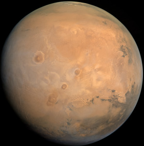

| Mercury | Mars | Saturn | Jupiter | |
|---|---|---|---|---|
| Images |  | |||
| Mass | 0.330 * 1024 | 0.642 * 1024 | 568 * 1024 | 1898 * 1024 |
| Length of Day (hours) | 4222.6 | 24.7 | 10.7 | 9.9 |
| Orbital Period (days) | 88.0 | 687.0 | 10,747 | 4331 |
| Mean Temperature (°C) | 167 | -65 | -140 | -110 |
| Global Magnetic Field | Yes | None | Yes | Yes |
| Number of Moons | 0 | 2 | 274 | 95 |
| Ring System | None | None | Yes | Yes |